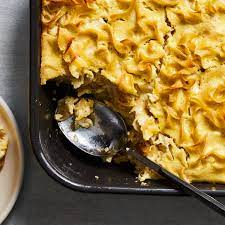

Sweet Noodle Kugel

Description
Sweet noodle kugel is perfect anytime! A classic Jewish comfort food, this recipe can be used at holidays throughout the Jewish year or anytime you need something comfortable and creamy.
Note: You can use homemade egg noodles if you're looking to be a star, but this is supposed to be easy and delicious! Just grab that store-bought package of noodles and get going. This is so delicious no one will know the difference.
Ingredients
- Wide egg noodles - 12oz package
- Eggs - 4
- Sugar - 1/2 cup
- Butter, unsalted - 1 stick
- Sour cream, full fat - 8oz package
- Vanilla extract - 1 tsp
- Salt - 1/4 tsp
- Crushed pineapple, drained - 10oz can
Steps
- Preheat your oven to 350 degrees F.
- Grease a square baking dish (8x8 or 9x9 works best). You'll want to use a deep square dish here, otherwise your kugel will turn out thin and you won't be able to scoop it up into delicious balls.
- Cook noodles for 8-10 minutes. Follow the package directions here!
- While the noodles cook, place butter in a large bowl
- When the noodles are done, drain them right away and add them right on top of the butter. You'll want the heat from the noodles to help melt your butter.
- In a separate bowl, whisk the eggs, sugar, and vanilla then pour it on top of the noodles and mix it up.
- Add the crushed pineapple, sour cream, and salt. Mix it up again.
- Put the noodle mixture into the greased baking dish and put it in the oven. Bake for 40-45 minutes or until the top just starts to look golden.